Arkansas Zoos
During Summer 2012, my mother and I took a trip from Gardner, KS to the northwestern tip of Arkansas. During that day trip we went to two zoos. One place we went to was Turpentine Creek Wildlife Refuge in Eureka Springs, Arkansas. Turpentine Creek is a big refuge for “big cats” including lions, tigers and cougars. The second place we went to was Wild Wilderness Drive-Through Safari in Gentry, Arkansas. Wild Wilderness is a drive through zoo. During this trip we had deers and zebras approaching my mother’s car! Click on one of the map markers to learn more about my trip to Arkansas!
Turpentine Creek Wildlife Refuge
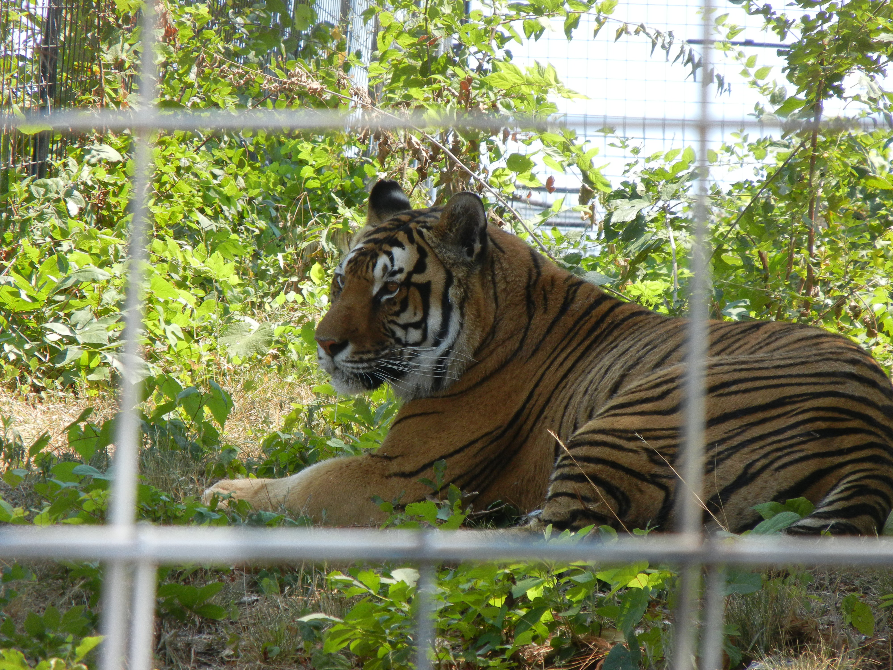
Turpentine Creek Wildlife Refuge is a refuge for “big cats” including lions, tigers, leopards and cougars. The refuge started after the Jackson family took in over 40 big cats from a breeder and black market dealer who was on the run from the law. These cats were temporarily kept on a large ranch in Eureka Springs, Arkansas. This ranch later became Turpentine Creek Wildlife Refuge. After the breeder moved all 70 of her cats to the ranch, the Jackson family moved to Eureka Springs and ran the refuge full time.
Turpentine Creek is one of several big cat sanctuaries around the country. The refuge is open to visitors every day of the year, excluding Christmas. Visitors enter through a large converted barn, which houses their admission center and gift shop. Admission is $20 per adult. The barn lets out into their main compound where visitors can get a close up view of several of their big cats. They give habitat tours and provide education to their visitors.
You can learn more about Turpentine Creek here.
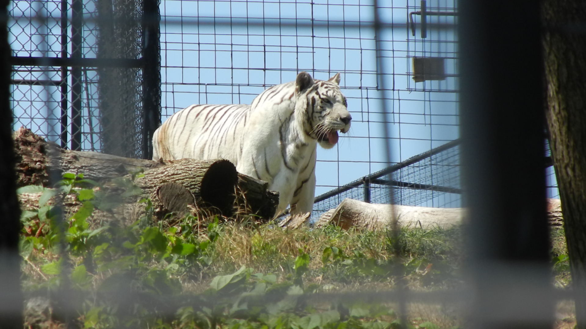
When I went to Turpentine Creek, Loretta the white Tiger turned 22! She got to celebrate with a cake made out of meat. I saw her on my walk around the perimeter of the park.
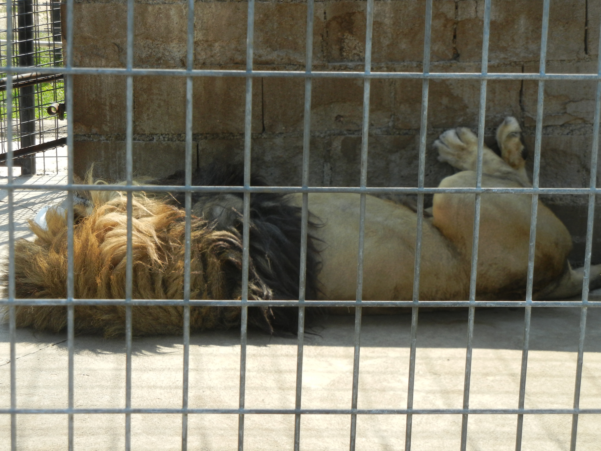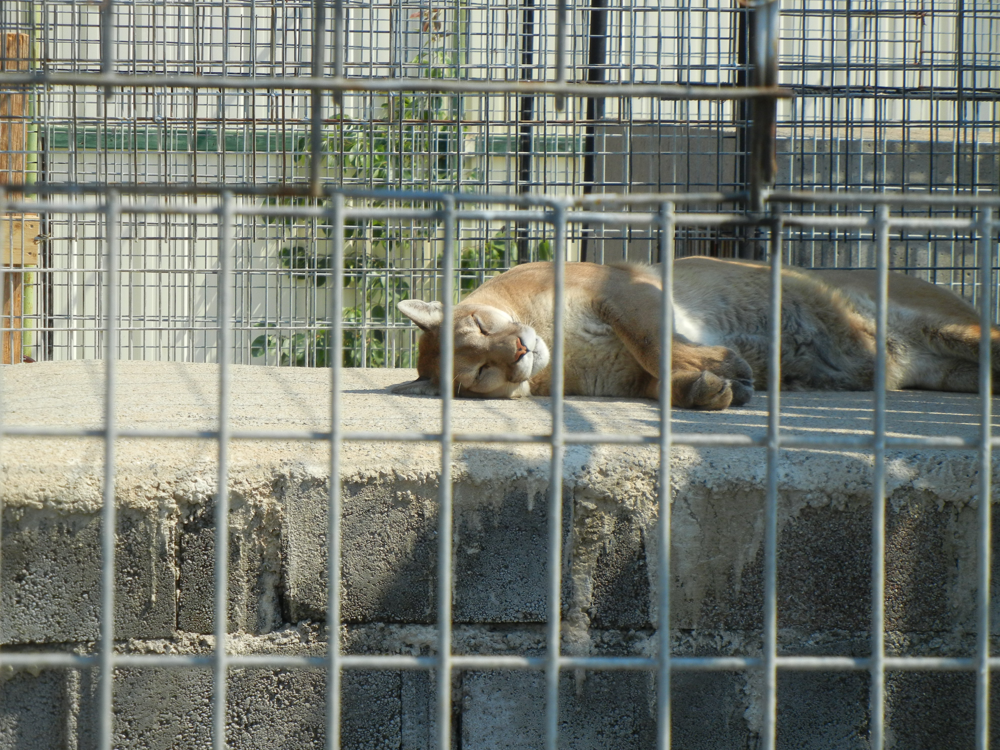
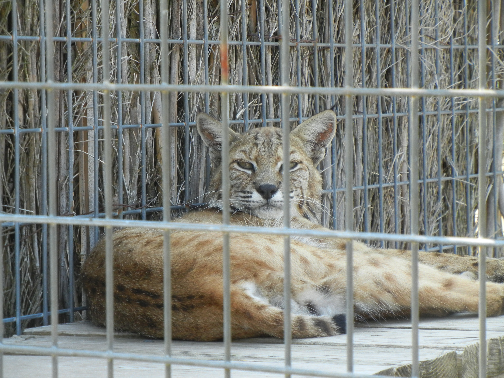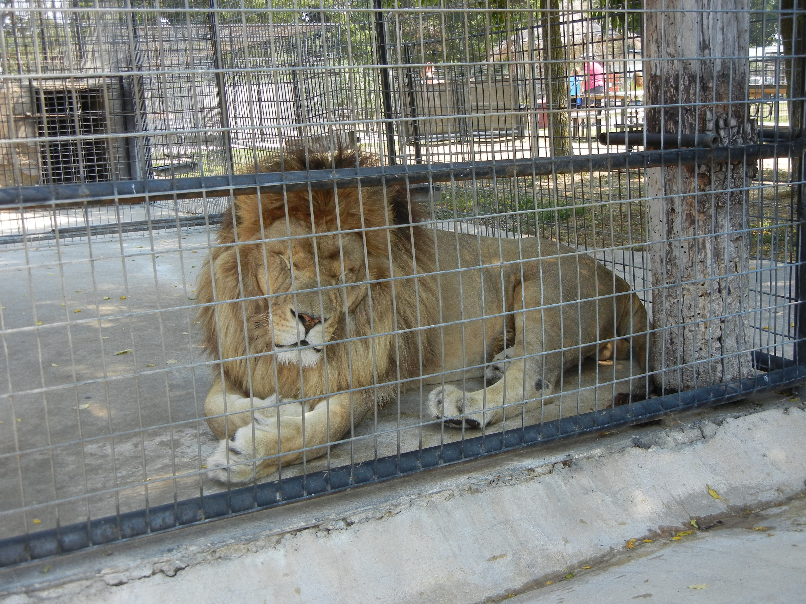
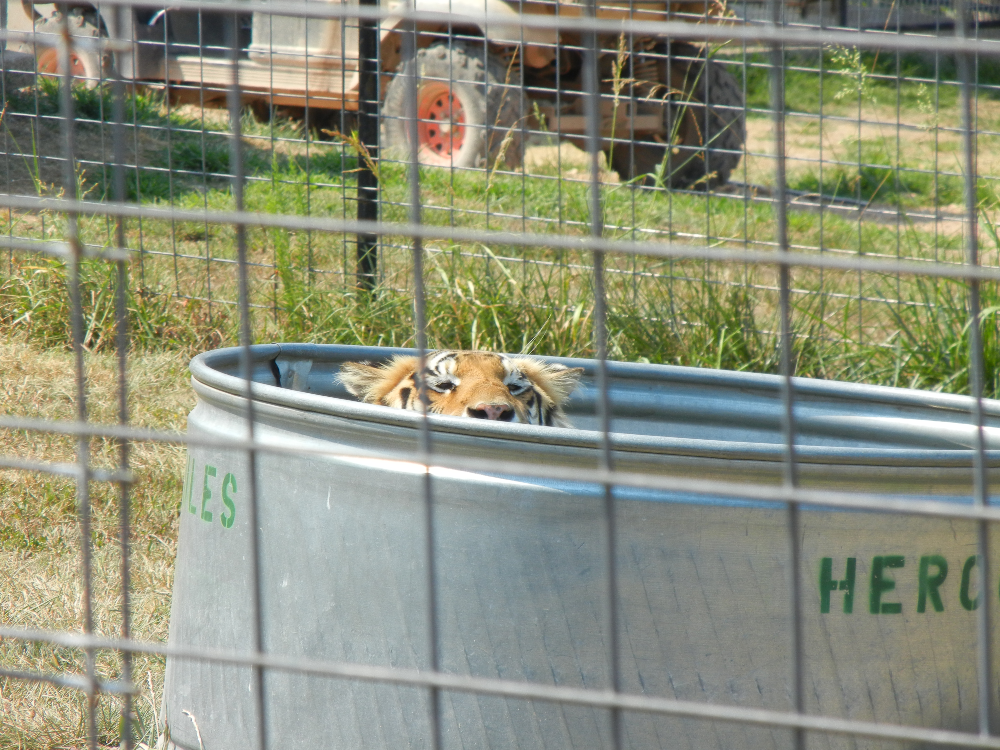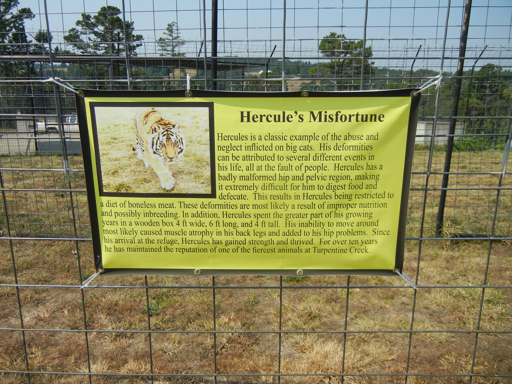
Wild Wilderness Drive-Through Safari
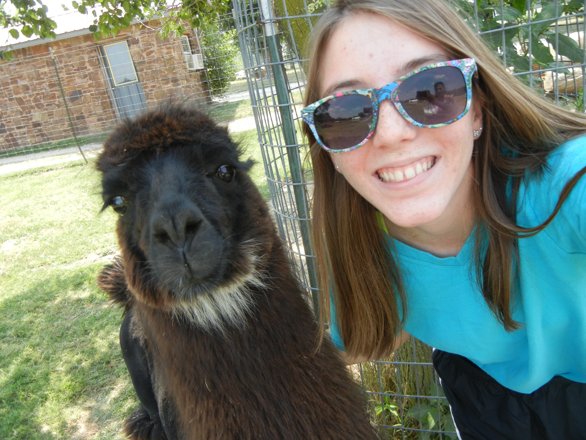
Wild Wilderness is a drive-through zoo located in Gentry, Arkansas. This zoo has its beginnings in the early 1950’s. Wild Wilderness originally started out as a small dairy farm. The Wilmoth family who owns the zoo began an exotic animal breeding program in the 1960’s. They cross-bred domestic cattle with American Buffalo. They also began raising herds of elk and deer. As a result, various people in the community would bring in orphaned or injured animals to the Wilmoth’s. In the 1970’s, there was so much outside interest the family decided to expand and open up the safari to the public.
Currently, animals reside on over 180 acres. There are parts of the park where visitors can drive through to see the animals up close from their vehicle. Animals such as tigers, leopards, cavies, exotic birds, primates and bears can be seen in fenced off areas and animals such as emus, deer and zebra are free to roam around and even approach your vehicle. There is also a petting zoo area where visitors can interact with goats, pigs, and llamas. The safari is open 365 days a year.
You can learn more about Wild Wilderness Drive-Through Safari here.
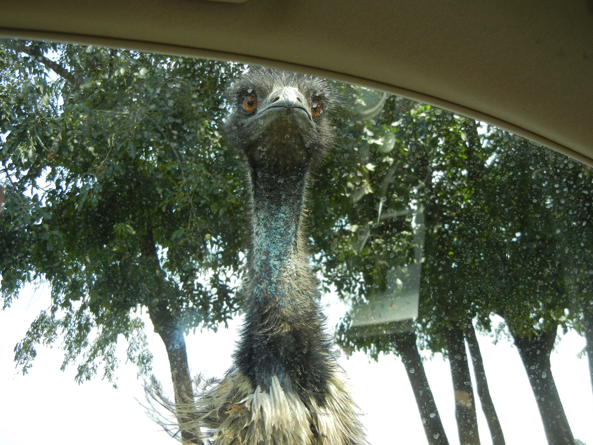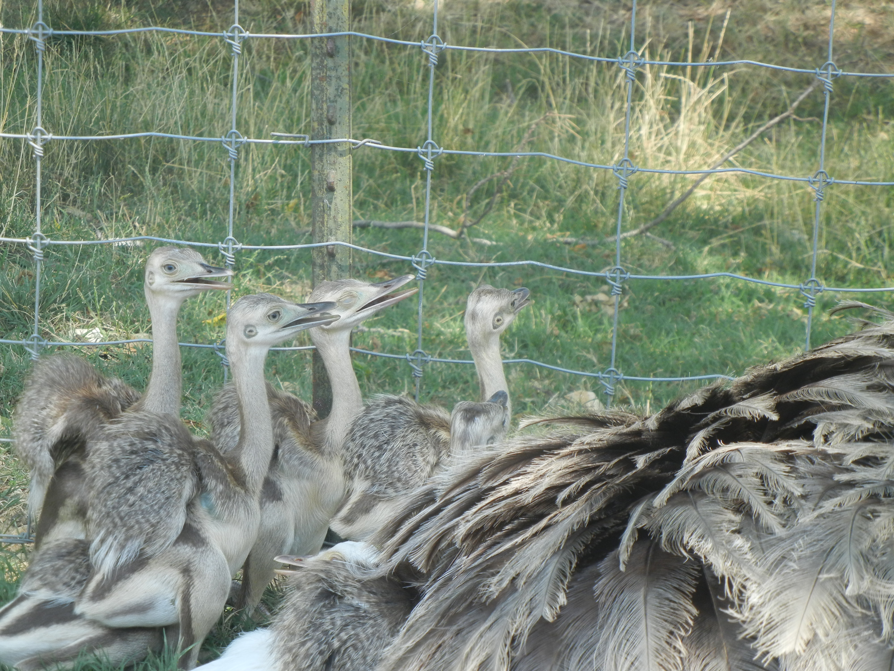
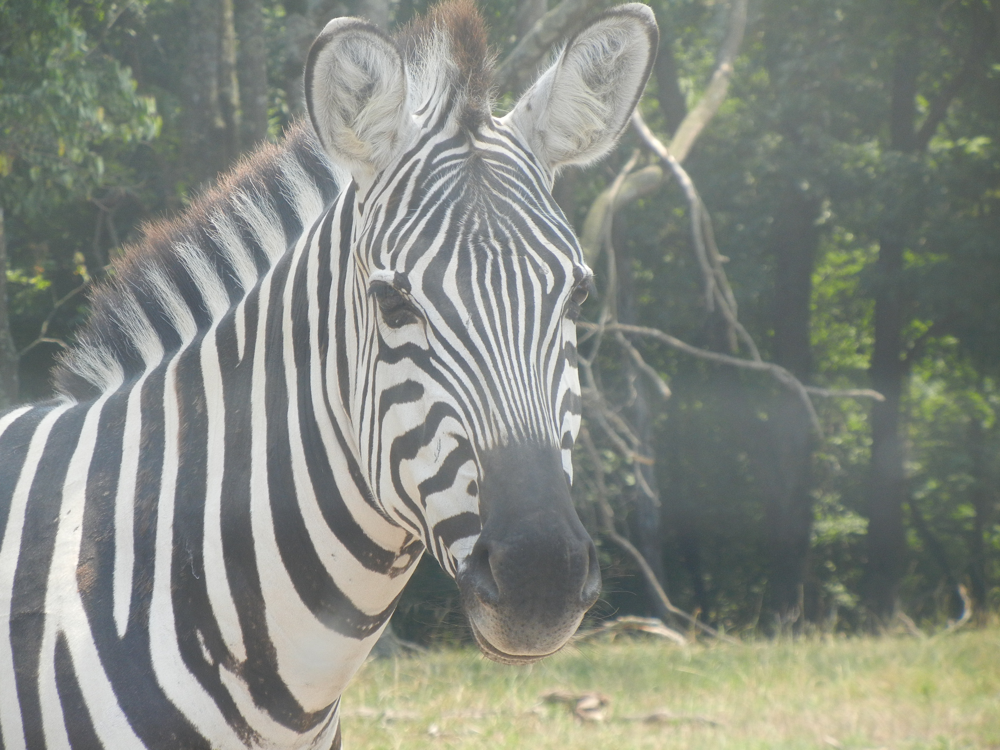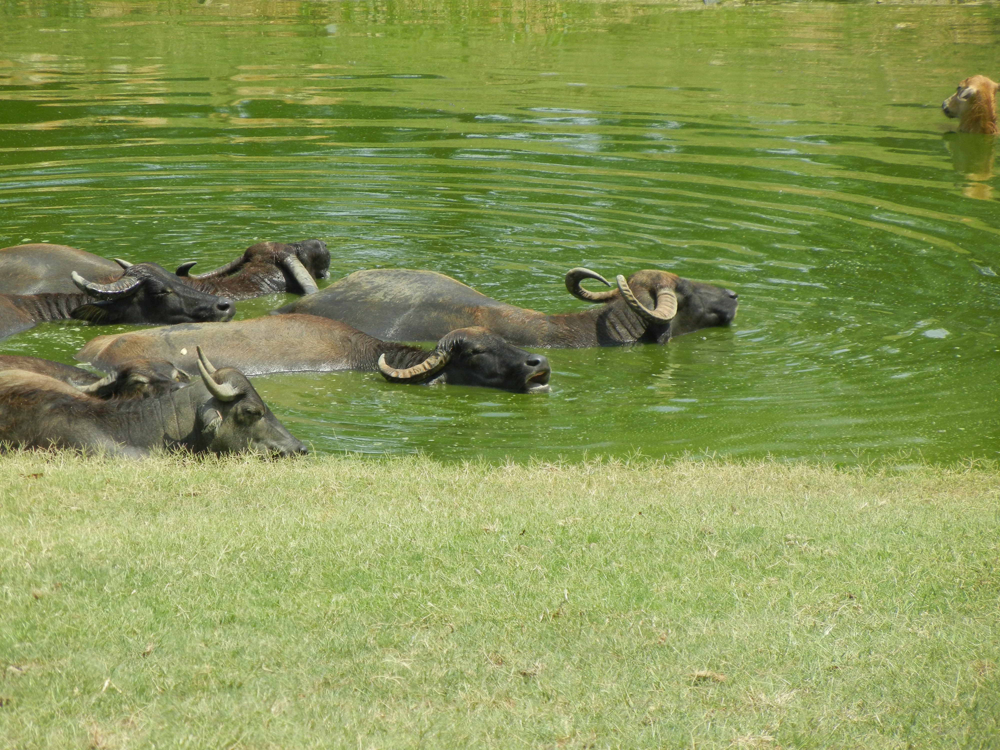